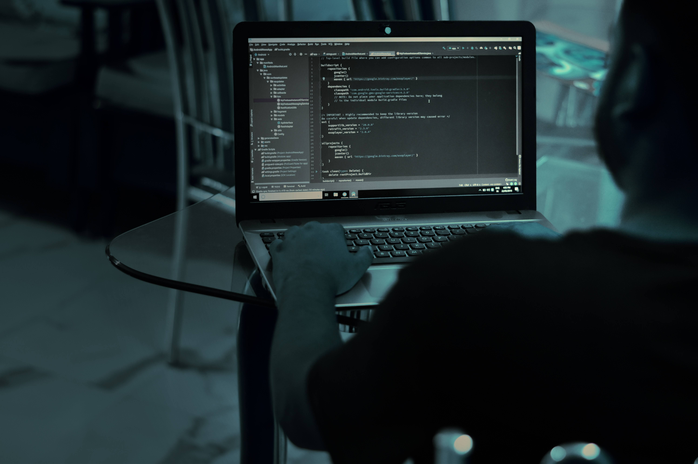

PROYECTOS
Bot ChatGPT 3.5
Bot en Telegram de inteligencia artificial conectado a la API de OpenAI, programado en Python e interactuando con la API de Telegram
Foto Bot
Bot alojado en Telegram el cual se le envia una foto, y el mismo la procesa y saca el texto de la imagen, y devuelve en texto plano el texto de esa imagen
Sistema de Notificaciones Automaticas
Sistema programado en Python, donde posee un frontend en donde el usuario igresa los datos de sus servicios. Y los clientes. El cual luego de establecer el vencimiento de ese servicio. Le llega al cliente una notificacion de ese servicio, El cual lo notifica 24 hs antes por whatsapp, telegram y mail.
Lock Bot
Bot programado en Python y alojado en Telegram, el cual genera de forma aleatoria, contraseñas de 18 caracteres, incluidos, caracteres especiales y alfa numericos
Pagina Web Personal
Pagina desarrollada con HTML5, CSS y Boostrap
Bot de Cursos de programación
Bot programado en Python, alojado en Telegram el cual tiene una gran cantidad de cursos de programacion, de diferentes leguajes